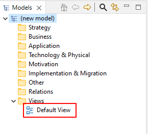
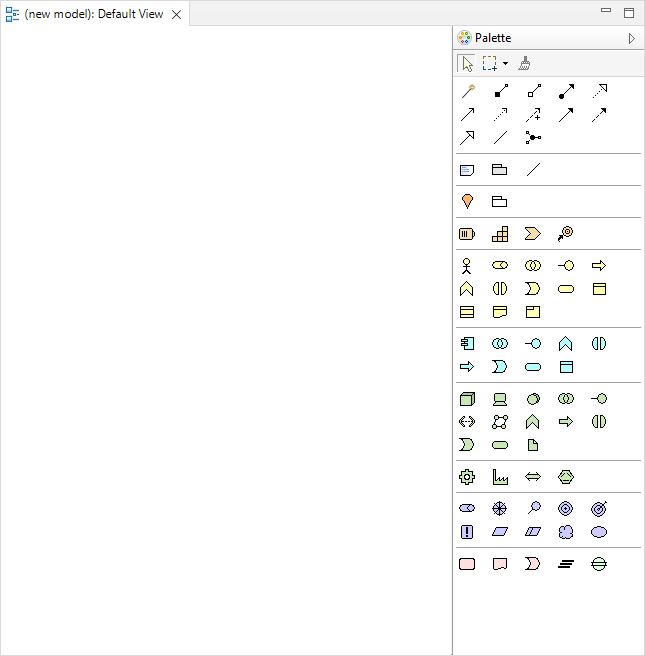
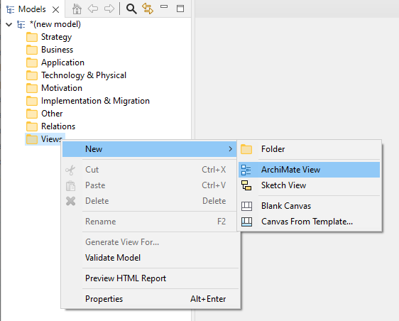

如果模型已经包含一个视图，它将在模型树的“视图”文件夹中可见：
模型树中的默认视图
要打开和编辑视图，请在模型树中双击它（或按 Ctrl-Shift-O / Command-Shift-O）。视图编辑器将打开，显示编辑画布和调色板：
显示空白绘图画布和调色板的视图编辑器
一个 ArchiMate 模型通常由多个视图组成。要为模型添加新视图，请右键单击模型树中的“视图”文件夹，然后从上下文菜单中选择“新建->ArchiMate 视图”：
向模型添加新视图
视图添加到模型后，可以通过双击从树中打开它。可以将任意数量的视图添加到模型并同时打开。视图排列在应用程序窗口主编辑区域的选项卡中。